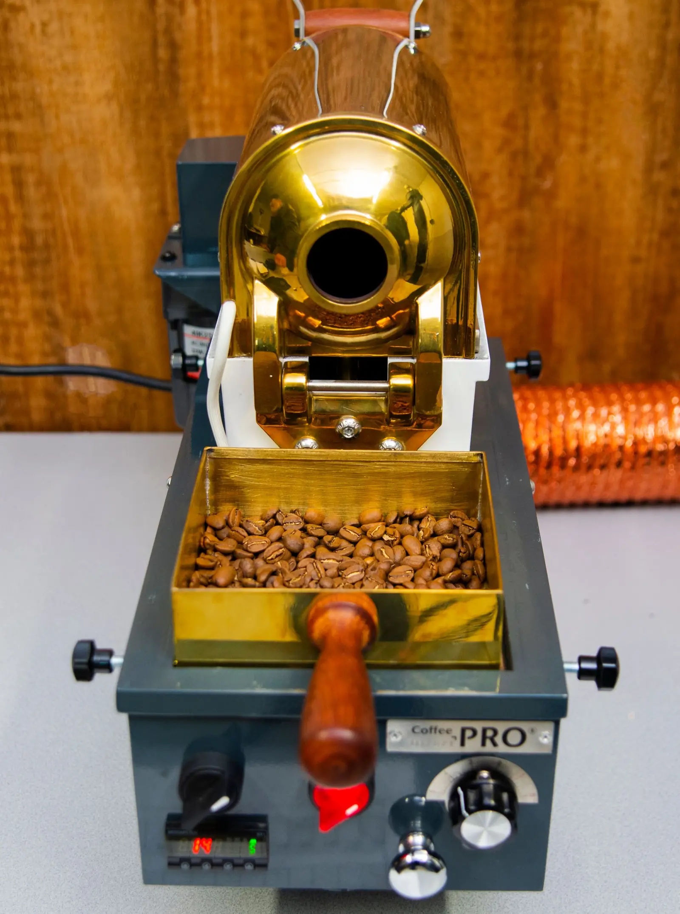
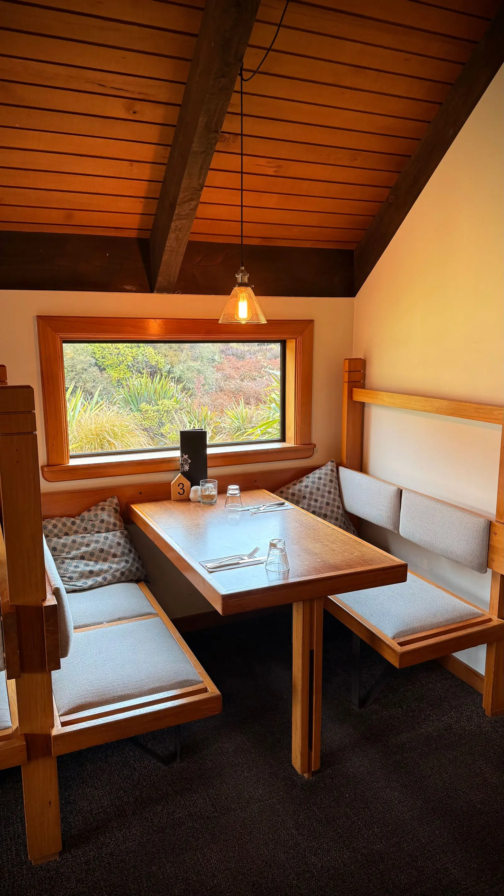
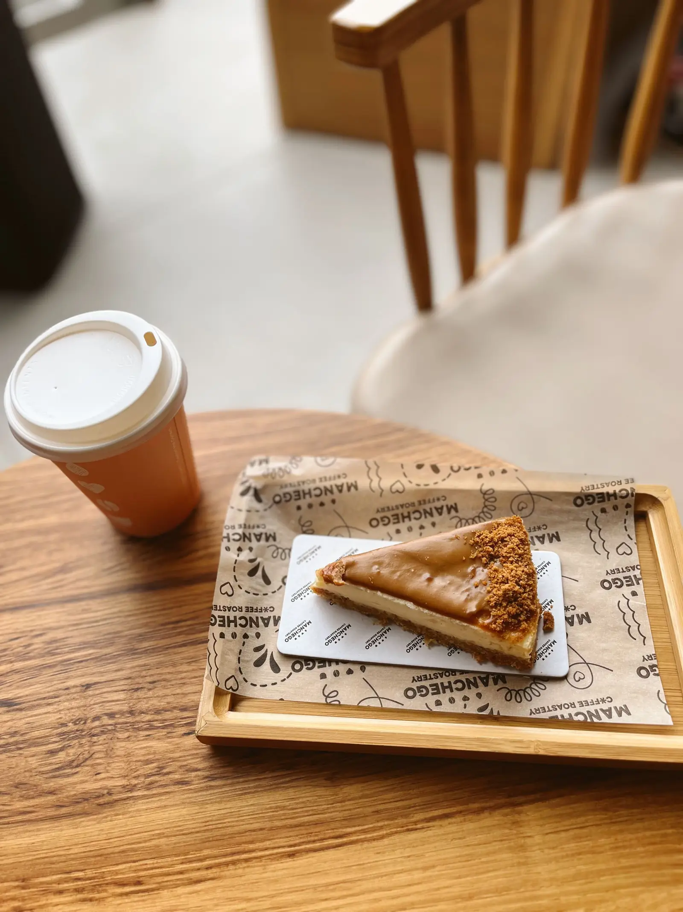
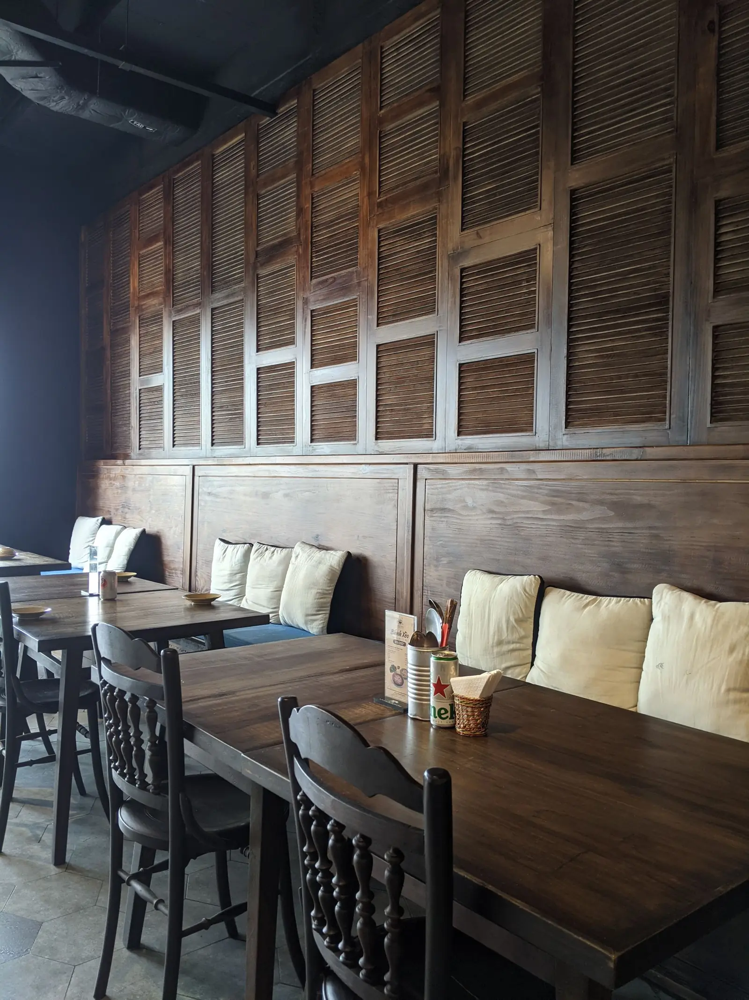

Roast & beans
豆を選ぶ楽しみから、
一杯がはじまる。
自家焙煎のコーヒーを、さまざまな豆から。香りの違いに目を向けながら、今日の気分に寄り添う一杯を見つけてみませんか。
豆の種類・提供内容はお店にご確認ください。

一杯を選ぶ、ひと息をつく。
町田・大蔵町の beans farm へ。
A little retreat
木に包まれるロッジのような雰囲気。
自家焙煎の香りと、甘いひと皿。
その日の気分でコーヒーを選び、
ゆっくりと味わう時間を大切に。

Roast & beans
自家焙煎のコーヒーを、さまざまな豆から。香りの違いに目を向けながら、今日の気分に寄り添う一杯を見つけてみませんか。
豆の種類・提供内容はお店にご確認ください。

Coffee & sweets
プリンやチーズケーキと、コーヒーを一緒に。ひと口、またひと口と、自分のペースで味わうひとときを。
写真はメニューのイメージです。

Warmth of wood
ロッジを思わせる木のぬくもり。コーヒーの香りを楽しみながら、日々の合間に、穏やかなひと休みを。
掲載写真は実際の店内ではありません。
Questions
店主確認後に掲載（営業時間）
店主確認後に掲載（定休日）
ご来店前にお店にご確認ください。
自家焙煎コーヒー、プリン、チーズケーキをご紹介しています。豆の種類や当日の提供状況はお店にご確認ください。
価格は店主確認後に掲載します。詳しくはお店にご確認ください。
東京都町田市大蔵町468-6です。
予約の可否や受付方法は、お店にご確認ください。電話：042-736-1918。
Find us
東京都町田市大蔵町468-6